House repaints: round three
Ten new painted variants. Nothing placed in game. Saved editor positions are preserved, with no runtime nudges or piece transforms. Overhanging art stays visible in the enlarged review canvases. Clearance failures and overlaps remain flagged.
Manifest · Editor layout · Clearance · Asset validation · Painting prompts · Notes
living
96px door route: FAIL. Footprint overlaps: 1. Clear positions outside the door-connected region: 39049. Layout needs review before placement.
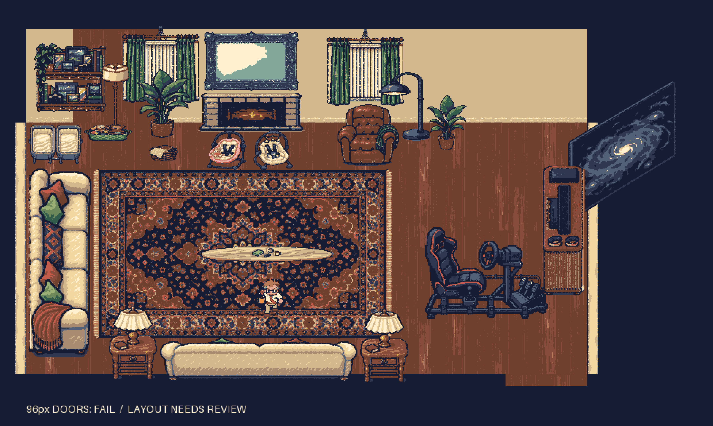
Footprints, room boundary and doors
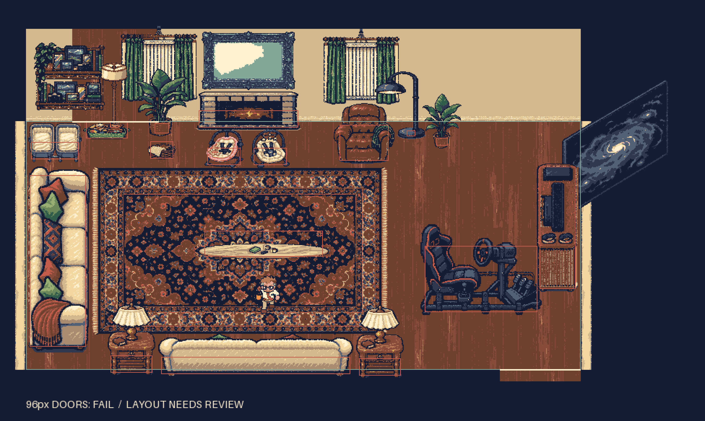
dining-desk-shared
96px door route: FAIL. Footprint overlaps: 4. Clear positions outside the door-connected region: 38847. Layout needs review before placement.
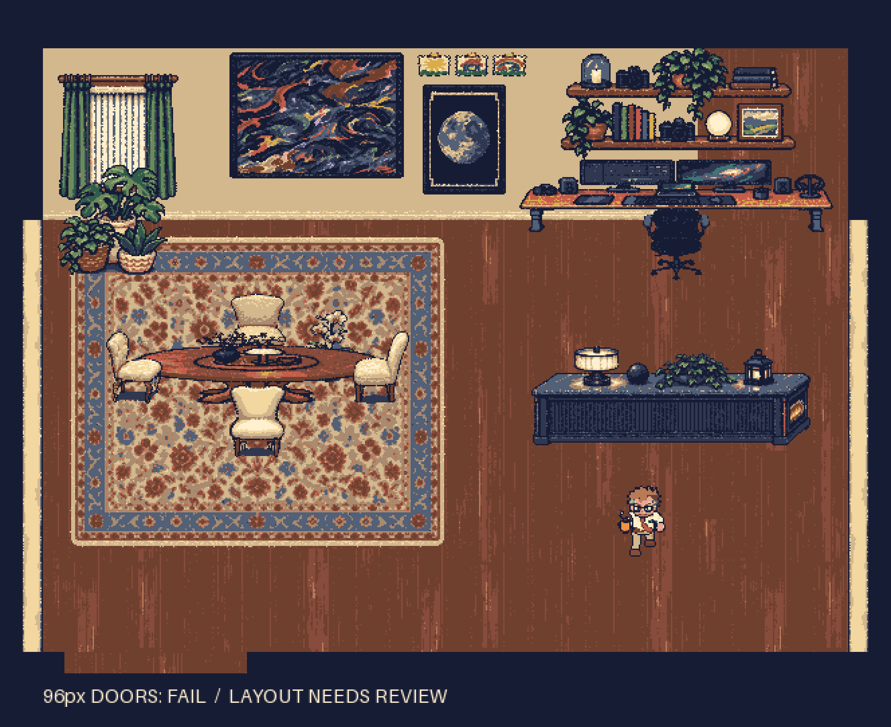
Footprints, room boundary and doors
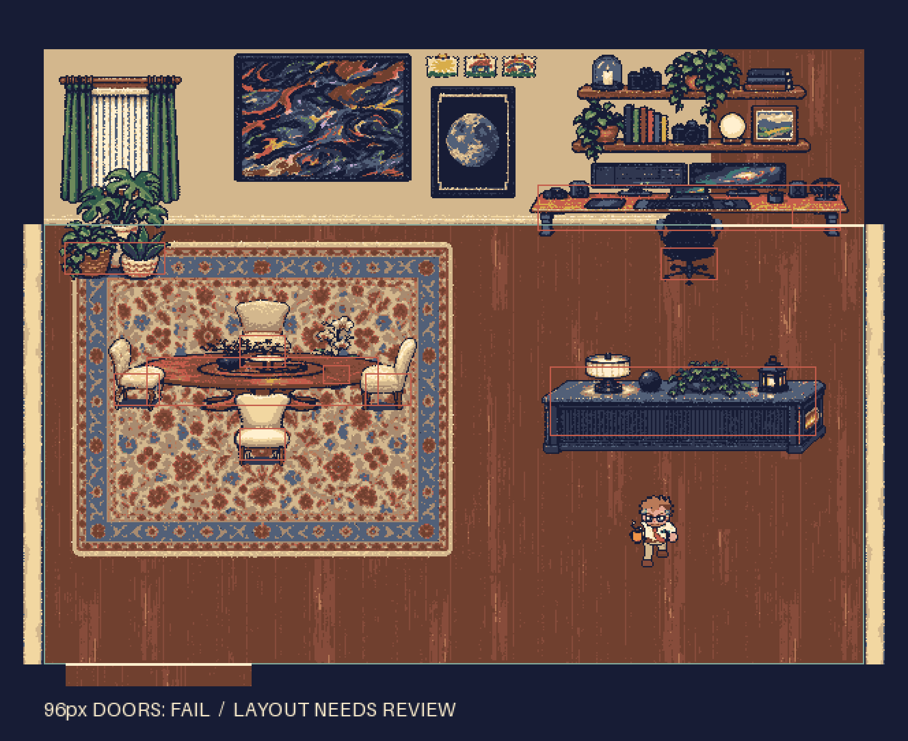
kitchen
96px door route: PASS. Footprint overlaps: 0. Clear positions outside the door-connected region: 0. Door-connected layout is clear.
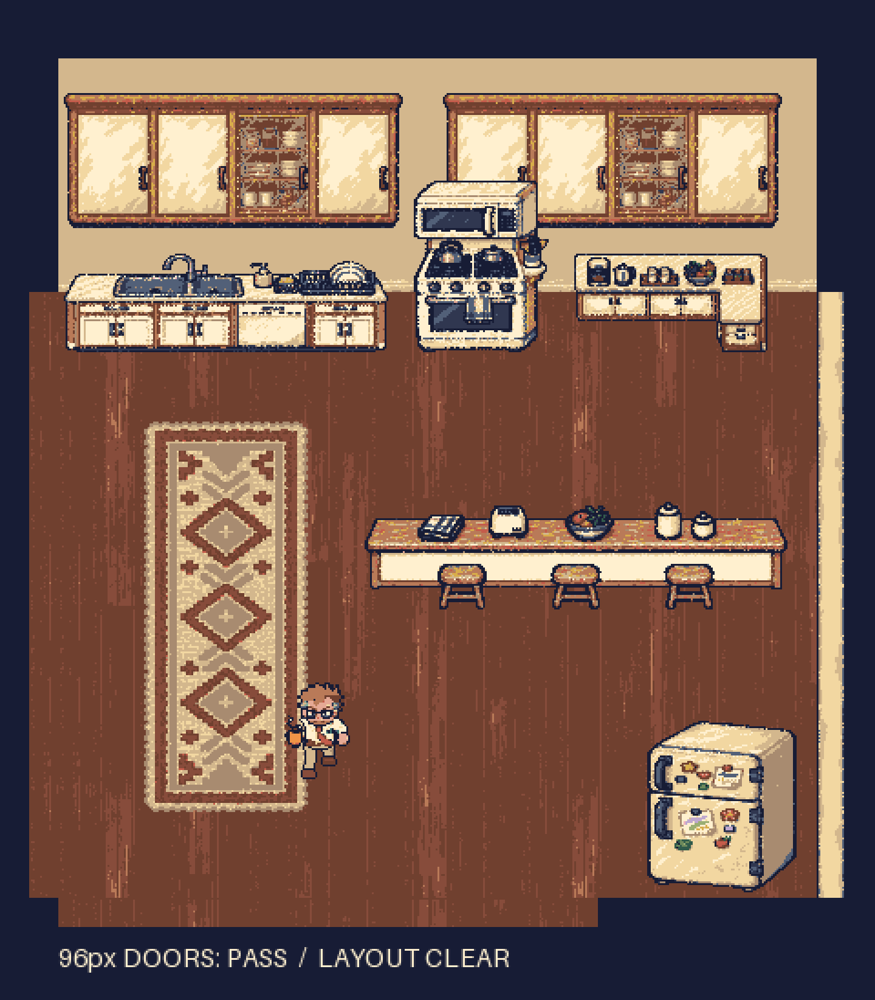
Footprints, room boundary and doors
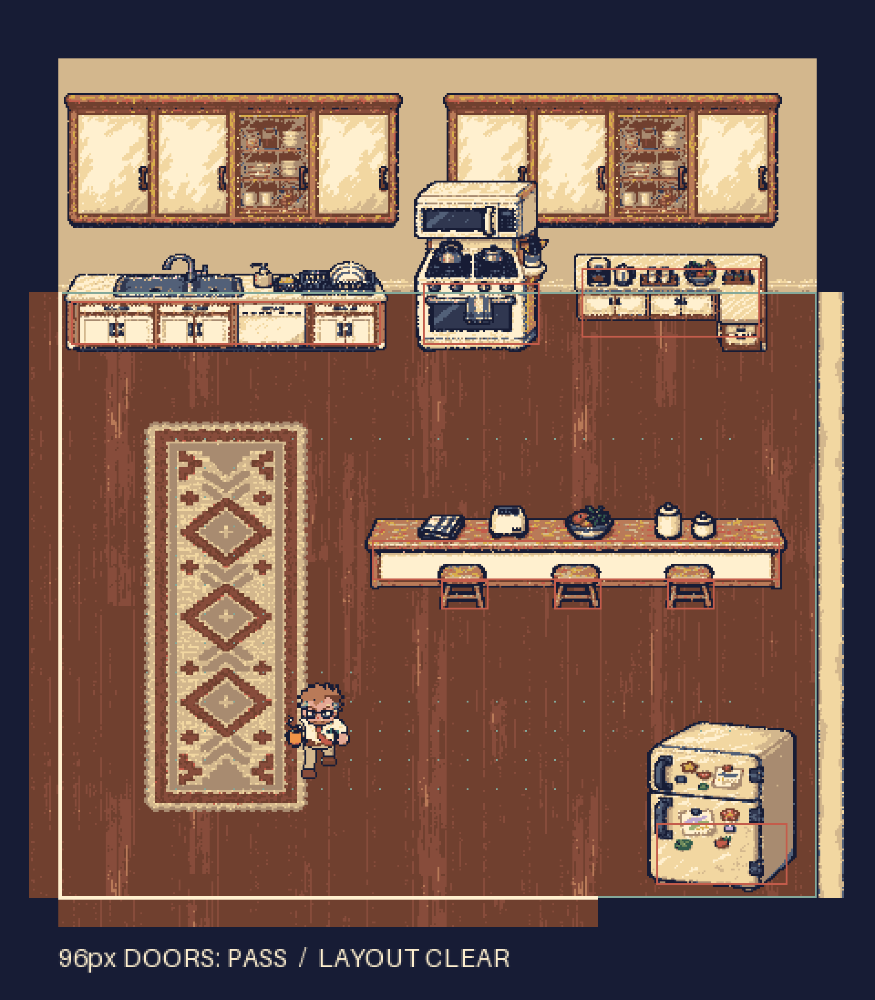
abe-room
96px door route: PASS. Footprint overlaps: 1. Clear positions outside the door-connected region: 7668. Layout needs review before placement.
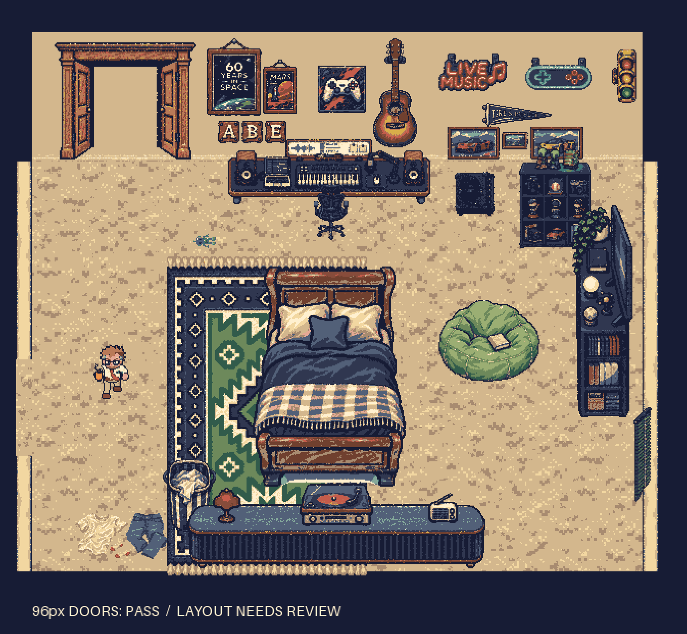
Footprints, room boundary and doors
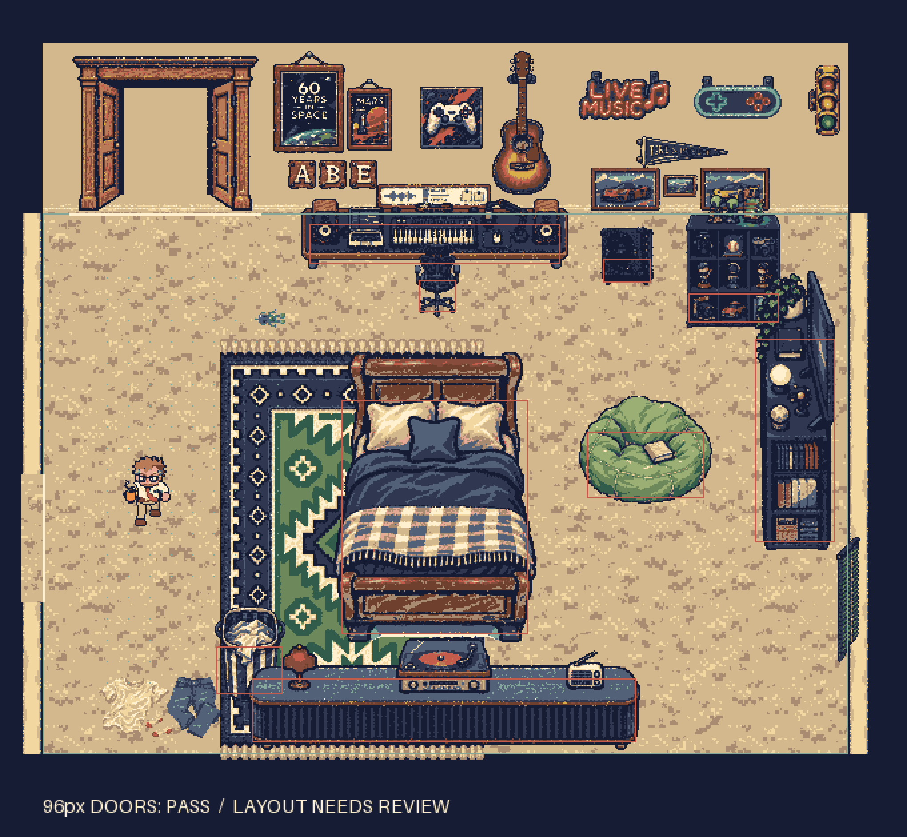
galaxy-wall-tv: 184 x 240
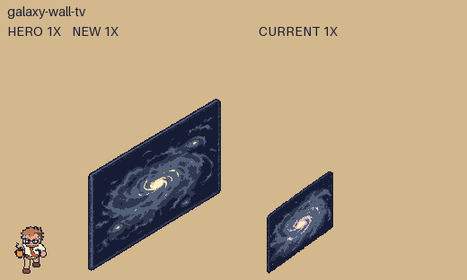
electric-console-east: 216 x 84
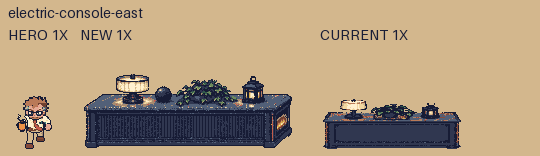
kitchen-counter-west: 240 x 90
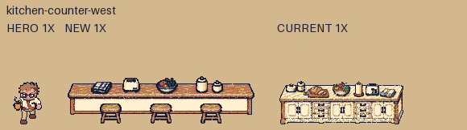
bird-of-paradise: 64 x 80
camera-book-shelves: 194 x 90
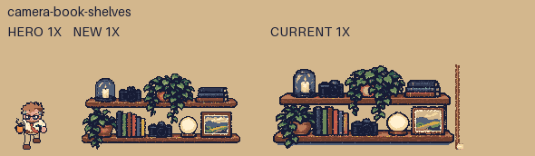
tv-cube-shelf-east: 96 x 216
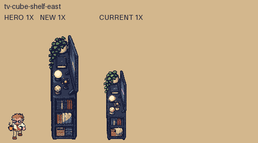
record-dresser-south: 306 x 114
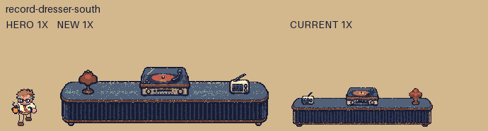
hamper: 72 x 78
guitar-amp: 60 x 48
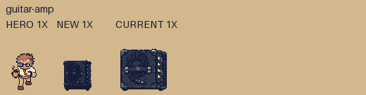
abe-rug: 224 x 320
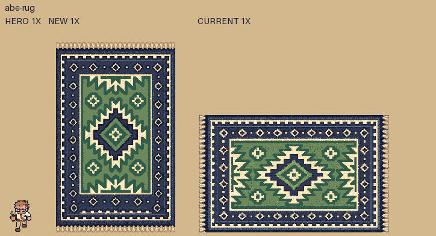